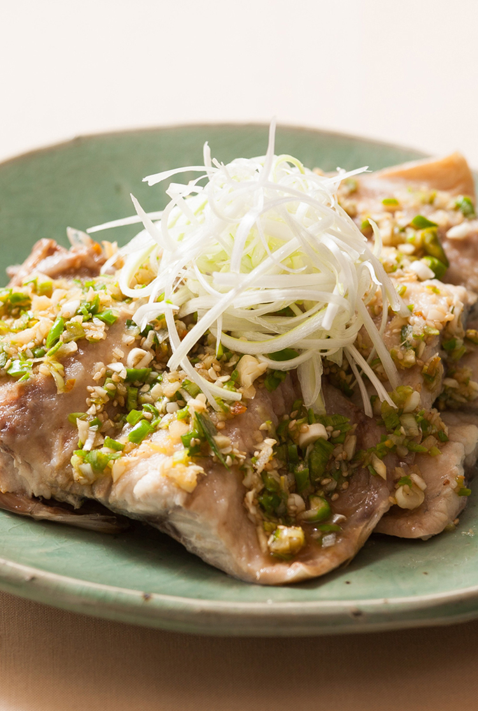

요리
통합검색
담백하게 입맛 돋우는 밥반찬
자반고등어찜
- 1.자반고등어는 물에 살짝 씻고 쌀뜨물에 청주를 섞어 10여분 담가 짠맛과 비린 맛을 일차적으로 제거한다.
- 2.양파는 채썬다.
- 3.밑바닥이 두꺼운 냄비에 양파를 고르게 펼쳐 깔고 생강술을 뿌린다.
- 4.①의 자반고등어를 건져 살쪽에 감자전분을 고르게 뿌린후 ③의 양파 위에 얹는다.
- 5.냄비 뚜껑을 닫고 생선이 익도록 강불에서 가열한다.
- 6.소스 분량대로 소스를 만든다.
이것이 봄의 맛이로구나
금귤방풍나물무침
- 1.방풍나물은 소금물에 살짝 데친 뒤 찬물에 헹궈 손으로 물기를 꼭 짠다.
- 2.금귤은 깨끗이 씻은 뒤 2등분하다.
- 3.분량의 양념장 재료를 한데 섞는다.
- 4.볼에 ①의 방풍나물과 ②의 금귤를 넣고 ③의 양념장으로 가볍게 무친다.
새콤짭짜름 계절밥상
장아찌주먹밥
- 1.오이지는 동글동글하게 썰어 찬물에 담가 짠 맛을 빼고 물기를 꼭 짜서 곱게 다진다.
- 2.톳장아찌는 물기를 꼭 짜서 곱게 다진다.
- 3.마늘쫑 절임은 찬물에 담가 짠맛을 빼고 물기를 꼭 짜서 곱게 다진다.
- 4.각각의 밥에 ①,②,③의 재료를 각각 넣어 잘 섞은 후 동그랗게 주먹밥을 만들어서 통깨를 솔솔 뿌린다
딸기가 좋아! 정말 좋아!
딸기또띠아피자
- 1.딸기는 씻어 찬물에 소금을 조금 풀어 담갔다 물기를 제거하고 적당히 썬다.
- 2.루꼴라도 씻어 찬물에 담갔다 물기를 제거한다.
- 3.볼에 리코타치즈와 꿀 1큰술을 넣고 섞는다.
- 4.또띠아 1장에 피자치즈를 조금 깔고 또띠아 1장을 덮고 꿀 2큰술을 펴 바른 후 피자치즈를 골고루 올린다.
- 5.프라이팬에 ④를 놓고 뚜껑을 닫고 약한 불에서 6~8분간(200도로 예열한 오븐에서 5~7분 정도) 치즈가 녹을 때까지 굽는다.
- 6.5인 또띠아에 씻어 두 딸기와 루꼴라를 골고루 올린 후 ③의
신규 요리